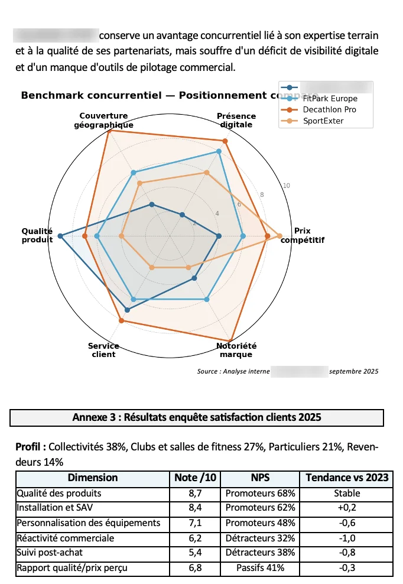
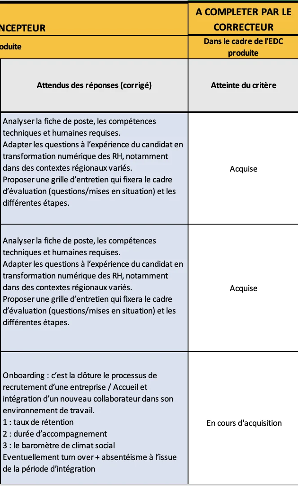
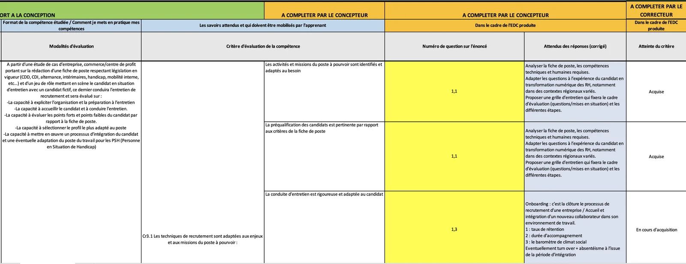

Sujets d'évaluation
Nous réalisons des sujets pour différentes sessions d'évaluation :

Certifications RNCP · RS · Titres professionnels
Le partenaire clé des certificateurs et des écoles.
+0
Sujets conçus
+0 ans
D'expérience dans l'enseignement supérieur

Qui sommes-nous ?
CASEMAN est née d'un parcours dans l'enseignement et la pédagogie.
Titulaire d'un Master Métiers de l'Enseignement, de l'Éducation et de la Formation (MEEF), en économie-gestion, préparé à l'INSPÉ de Bordeaux, j'ai acquis au cours de cette formation des compétences solides en pédagogie, en conception de sujets d'évaluation et en compréhension des référentiels de formation.
J'ai ensuite pu mettre en pratique et développer ces compétences au fil de mes expériences dans l'enseignement supérieur.
Après plusieurs années d'expérience dans l'enseignement supérieur, j'ai naturellement commencé à répondre aux besoins de certains certificateurs et organismes de formation pour concevoir leurs sujets d'évaluation, en parallèle de mon activité de formateur.
Mon expérience auprès des étudiants, associée à ma formation à l'INSPÉ, m'a permis de développer une double compétence : connaître les attentes et les difficultés des étudiants, tout en sachant adapter les sujets aux exigences des référentiels.
C'est cette complémentarité qui m'a progressivement amené à me spécialiser dans la conception d'études de cas et d'évaluations professionnelles.
En 2025, j'ai décidé de créer CASEMAN, une agence spécialisée dans la conception d'études de cas et de supports d'évaluation.
CASEMAN accompagne les certificateurs et les organismes de formation dans la création de leurs évaluations, notamment pour les certifications enregistrées au RNCP, au Répertoire spécifique (RS), ainsi que pour les titres professionnels.
Ce que nous faisons
CASEMAN accompagne les certificateurs et les organismes de formation dans la conception de leurs évaluations, en tenant compte des référentiels de compétences et des besoins de chaque structure.
Nous réalisons des sujets pour différentes sessions d'évaluation :

Nous réalisons des corrigés clairs et détaillés, avec les réponses attendues et les explications nécessaires pour faciliter le travail des correcteurs.

Nous concevons des grilles adaptées aux référentiels de compétences, avec des critères et des indicateurs précis pour faciliter l'évaluation des candidats.

Des prestations sur mesure, adaptées aux référentiels et aux attentes de chaque certificateur.
Sciences de gestion
Nous intervenons principalement dans le domaine des sciences de gestion.
Notre engagement
Trois principes guident chacune de nos missions, de la première lecture du référentiel à la livraison de vos épreuves.
Des sujets conformes aux attendus des référentiels, livrés dans les délais convenus.
Une exigence pédagogique issue de l'enseignement et de la pratique quotidienne de la formation.
Une relation durable, fondée sur la transparence et la confidentialité de vos épreuves.
Contact
Présentez-nous votre titre et votre calendrier : nous vous adressons une proposition adaptée.
Contactez-nous